Microneedle systems
Hydrogel-forming, swellable and 3D-printed microneedles for minimally invasive sensing and delivery.
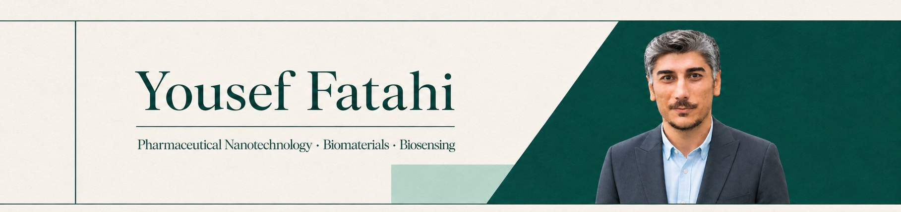
PhD researcher in Pharmaceutical Nanotechnology at Tehran University of Medical Sciences and visiting researcher at Institut Català d’Investigació Química (ICIQ).
His current work focuses on wearable microneedle-based biosensors for continuous drug monitoring in interstitial fluid. His long-term aim is to develop an autonomous therapeutic platform capable of measuring, deciding and responding in real time.
Four connected programs moving from materials design to personalized intervention.
Hydrogel-forming, swellable and 3D-printed microneedles for minimally invasive sensing and delivery.
Wearable microneedle biosensors for real-time drug monitoring in dermal interstitial fluid.
Smart nanocarriers, local hydrogel depots and extracellular-vesicle delivery platforms.
Sense-and-act systems that connect continuous molecular measurement with precise intervention.
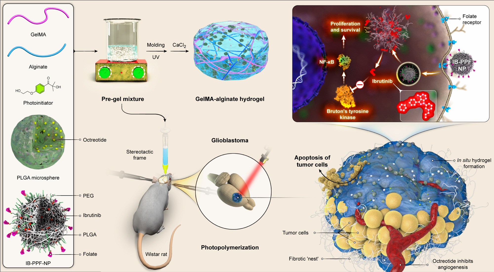
 Progress in Polymer Science32.8
Progress in Polymer Science32.8 Coordination Chemistry Reviews25.6
Coordination Chemistry Reviews25.6 Advances in Colloid and Interface Science23.7
Advances in Colloid and Interface Science23.7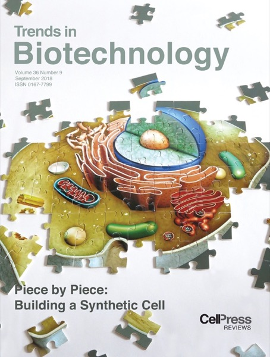
Trends in Biotechnology14.3 Carbon12.7
Carbon12.7 Journal of Nanostructure in Chemistry19.2
Journal of Nanostructure in Chemistry19.2 Journal of Controlled Release12.4
Journal of Controlled Release12.4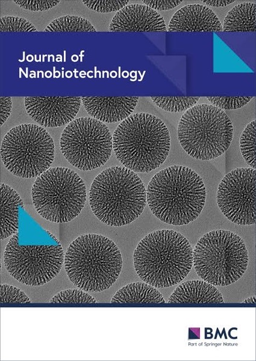
Journal of Nanobiotechnology15.0 Acta Biomaterialia10.4
Acta Biomaterialia10.4 Biotechnology Advances14.1
Biotechnology Advances14.1 Materials Today Bio11.0
Materials Today Bio11.0 Carbohydrate Polymers13.2
Carbohydrate Polymers13.2 Journal of Hazardous Materials10.6
Journal of Hazardous Materials10.6 Nano Today10.7
Nano Today10.7 Critical Reviews in Food Science and Nutrition10.6
Critical Reviews in Food Science and Nutrition10.6124 publications · 2014–2026
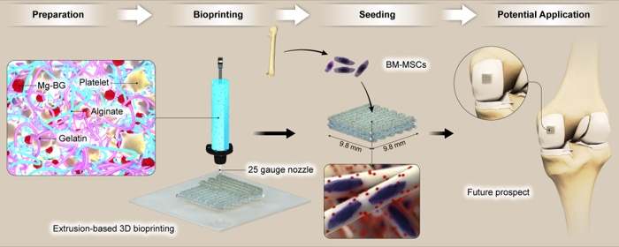
001Arezoo Ashrafnia Menarbazari, Fatemeh Saberi, Rooja Kalantarzadeh, Yousef Fatahi, Abolfazl Heydari, Sarah Simorgh
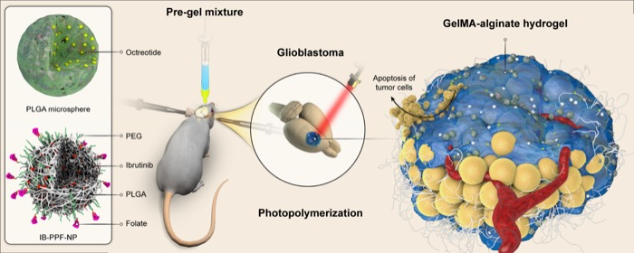
002Bahar Morshedi, Mehdi Esfandyari-Manesh, Mohammad Hossein Ghahremani, Yousef Fatahi, Rassoul Dinarvand
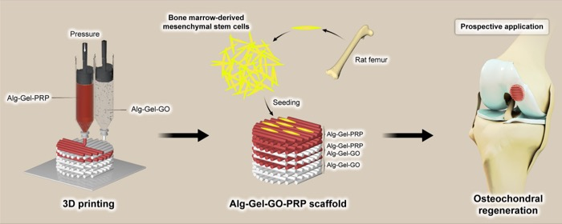
003Faezeh Ghobadi, Maryam Mohammadi, Rooja Kalantarzadeh, Arezoo Ashrafnia Menarbazari, Jila Majidi, Ehsan Lotfi, Shokoufeh Borhan, Yousef Fatahi, Narendra Pal Singh Chauhan, Ghazaleh Salehi, Sara Simorgh
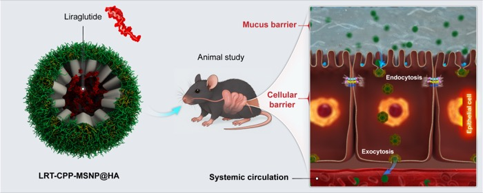
004Narges Shams, Mehdi Esfandyari-Manesh, Mohammad Sharifzadeh, Mohsen Amini, Yousef Fatahi, Rassoul Dinarvand
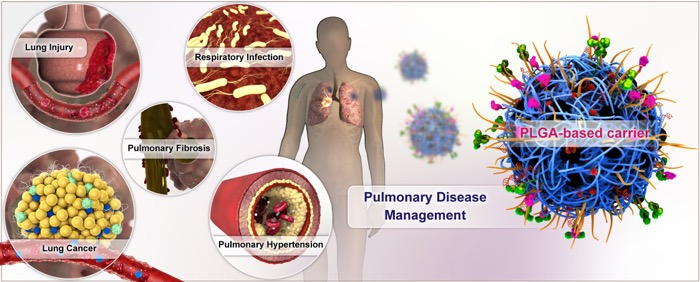
005Sareh Kakavandi, Iman Zare, Narges Esmaeilnejad, Mohammad Sarhadi, Ali Hheidari, Shirin Shojaei, Yousef Fatahi, Mojdeh Mirshafiei, Mingzhen Zhang, Fariborz Sharifianjazi, Kai Zheng, Ketevan Tavamaishvili, Maryam Iranpour, Chowon Kim, Saeed Zanganeh, Roshni Senthilkumar, Bryan Ronain Smith, Rassoul Dinarvand, Hamid Rashedi, Meng Yu, Heemin Kang, Pooyan Makvandi
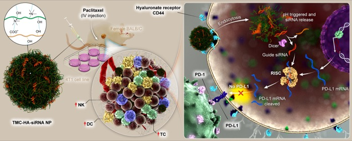
006Naghmeh Jabarimani, Ehsan Khabazian, Bahar Morshedi, Yousef Fatahi, Mina Hosseini, Farhad Jadidi Niaragh, Fatemeh Atyabi, Farid Dorkoosh
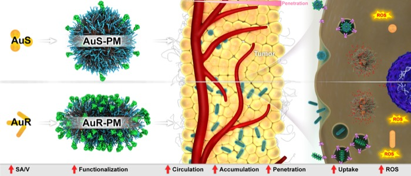
007Samane Maghsoudian, Saeed Shahbaz, Amir Rezaei-Aderiani, Sahra Perseh, Amir Rakhshani, Effat Nekoueifard, Esmat Sajjadi, Yousef Fatahi, Hamidreza Motasadizadeh, Rassoul Dinarvand
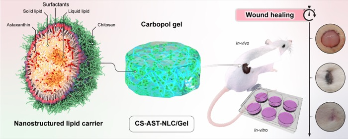
008Fatemeh Barari, Samane Maghsoudian, Vajihe Alinezhad, Seyedeh Melika Ahmadi, Fereshteh Talebpour Amiri, Yousef Fatahi, Mohammad Barari, Pedram Ebrahimnejad, Jafar Akbari, Fatemeh Atyabi, Rassoul Dinarvand
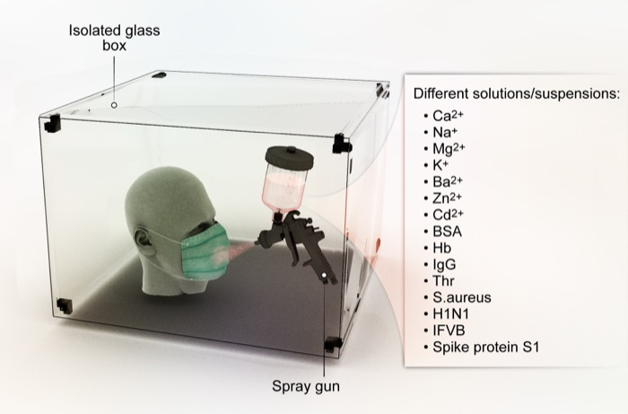
009Hossein Daneshgar, Yousef Fatahi, Ghazal Salehi, Mojtaba Bagherzadeh, Navid Rabiee
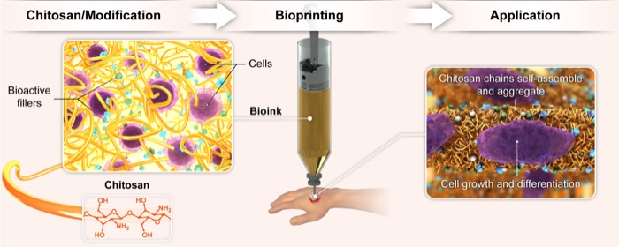
010Faezeh Ghobadi, Rooja Kalantarzadeh, Arezoo Ashrafnia Menarbazari, Ghazaleh Salehi, Yousef Fatahi, Sara Simorgh, Gorka Orive, Alireza Dolatshahi-Pirouz, Mazaher Gholipourmalekabadi
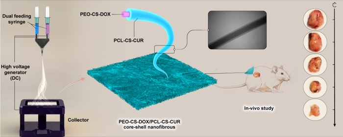
011Amir Rakhshani, Samane Maghsoudian, Negin Mousavi Ejarestaghi, Mahzad Yousefi, Sepideh Yoosefi, Nima Asadzadeh, Yousef Fatahi, Behzad Darbasizadeh, Zeinab Nouri, Saeed Bahadorikhalili, Alireza Shaabani, Hassan Farhadnejad, Hamidreza Motasadizadeh
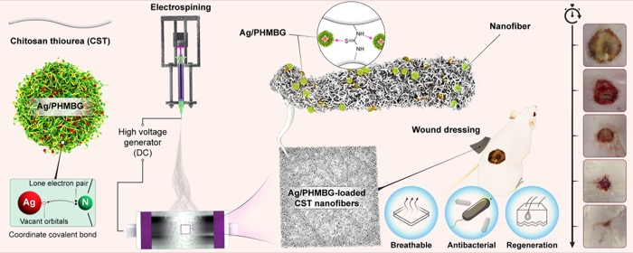
012Saeed Nematollahi, Samane Maghsoudian, Hamidreza Motasadizadeh, Zeinab Nouri, Kimia Azad, Yousef Fatahi, Nasrin Samadi, Mahsa Mahmoudieh, Alireza Shaabani, Rassoul Dinarvand
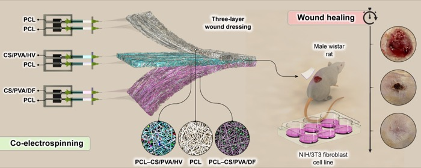
013Negin Mousavi-Ejarestaghi, Alireza Shaabani, Shahriyar Milani, Maral Motedayen, Samane Maghsoudian, Yousef Fatahi, Malihe Sadat Razavi, Mahnaz Khanavi, Negar Mousavi-Ejarestaghi, Mohamadmehdi Ramezani, Nastaran Sayyari, Hamidreza Motasadizadeh, Hamid Akbari javar
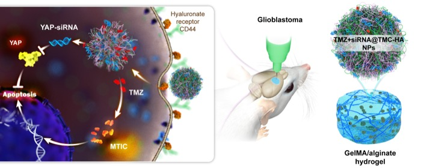
014Aryan Foroohari, Bahar Morshedi, Mostafa Heydari, Fatemeh Khonsari, Mohammad Hosein Fathian Nasab, Yousef Fatahi, Mehdi Esfandyari-Manesh, Rassoul Dinarvand
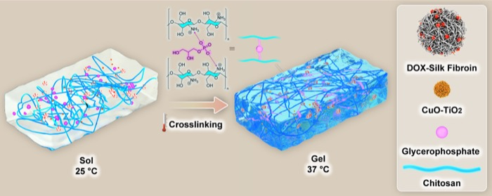
015Samane Maghsoudian, Mohaddese Pourashory Yektakasmaei, Alireza Shaabani, Sahra Perseh, Yousef Fatahi, Zeinab Nouri, Mahdi Gholami, Nastaran Sayyari, Hesam Aldin Hoseinzadeh, Hamidreza Motasadizadeh, Rassoul Dinarvand
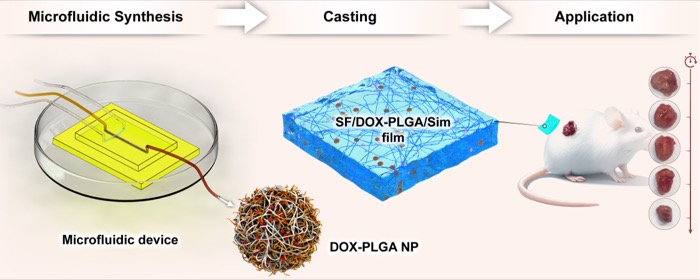
016Amir Rakhshani, Samane Maghsoudian, Hamidreza Motasadizadeh, Yousef Fatahi, Atefeh Malek-Khatabi, Mohammad Hossein Ghahremani, Fatemeh Atyabi, Rassoul Dinarvand